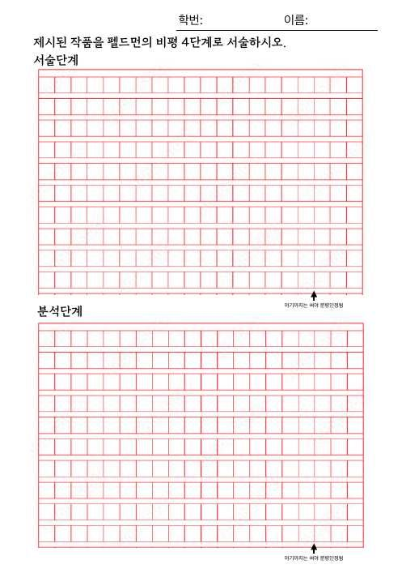
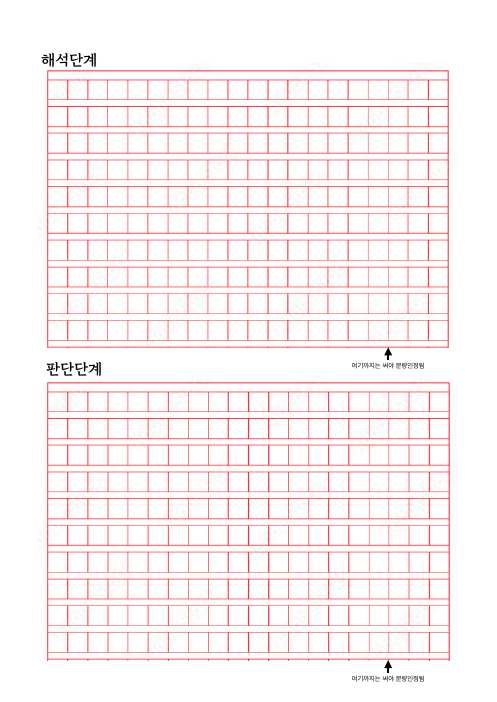

내려받아 인쇄하고, 손으로 써 보세요


수행평가 원고지
A4 두 쪽. 단계마다 분량 인정선이 있습니다. 평가 날에는 선생님이 나눠 주니, 이 파일은 연습용입니다.
원고지 쓰는 법
- 영어·숫자는 한 칸에 두 글자, 문장 부호는 한 칸에 하나.
- 첫 칸만 띄어 쓰고, 그다음은 계속 붙여 씁니다.
- 맞춤법은 채점하지 않아요. 단계에 맞춘 논리가 핵심.
- 필기도구는 자유(빨간색 제외). 글씨는 또박또박!
제출 전 자기 점검표
- 서술 — 제목·작가·연도·재료와 보이는 것을 썼나요?
- 분석 — 조형 요소와 원리를 정확한 용어로 쓰고, 효과까지 썼나요?
- 해석 — 작가의 의도를 작품 속 근거나 시대 배경과 연결했나요?
- 판단 — 나의 평가와 그 이유를 썼나요?
- 단계마다 분량 인정선까지 썼나요?
- 학번과 이름을 썼나요?